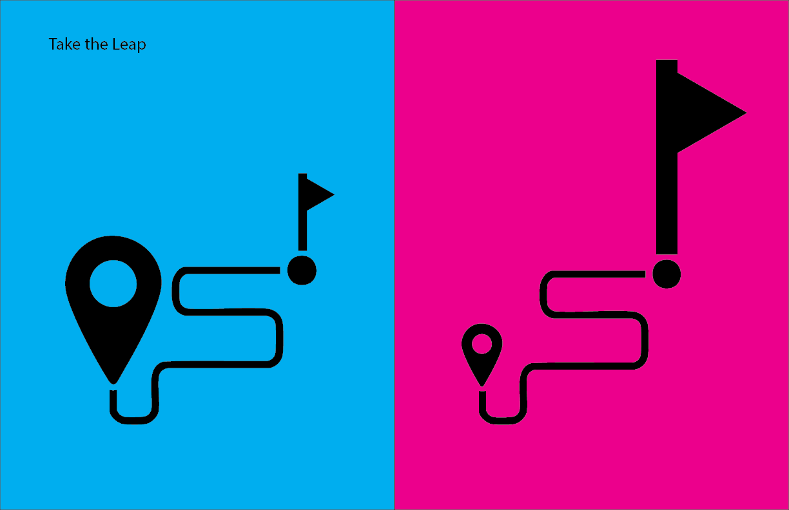

Featured Projects

Take the Leap
Icon design system for a motivational brand, focusing on clarity and emotional resonance to inspire users to take action.

College Life Infographic
Personal data visualization tracking 100 weeks at Wellesley College, featuring location analytics, food photography, and family relationships over time.

Country Joe's Pets Brand Identity
Reimagined branding for a fictional pet store emphasizing humane, stress-free care with a chocolate bar-inspired design aesthetic.
' width='400' height='250'/%3E%3Cellipse cx='200' cy='180' rx='80' ry='40' fill='white' opacity='0.2'/%3E%3Cpath d='M 150 150 Q 200 130 250 150' stroke='white' stroke-width='2' fill='none' opacity='0.4'/%3E%3Ctext x='50%25' y='15%25' dominant-baseline='middle' text-anchor='middle' fill='white' font-family='Arial' font-size='20' font-weight='bold'%3ECyanotype Postcard%3C/text%3E%3C/svg%3E)
Cyanotype Postcard Project
Process documentation for creating botanical art using traditional cyanotype printing techniques with natural materials and sunlight.


' width='800' height='400'/%3E%3Cellipse cx='400' cy='320' rx='160' ry='80' fill='white' opacity='0.2'/%3E%3Cpath d='M 300 280 Q 400 240 500 280' stroke='white' stroke-width='3' fill='none' opacity='0.4'/%3E%3Ctext x='50%25' y='15%25' dominant-baseline='middle' text-anchor='middle' fill='white' font-family='Arial' font-size='32' font-weight='bold'%3ECyanotype Postcard Process%3C/text%3E%3C/svg%3E)